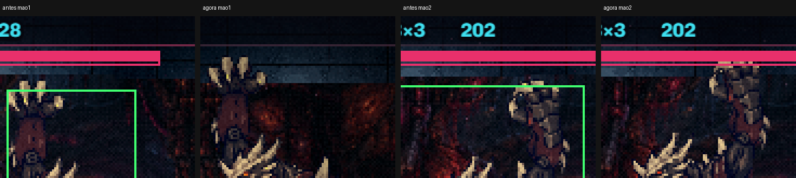

25/11, feito com você fora ("pode começar o passo 4, no localhost principal mesmo… corrigimos tudo e verificamos quando eu voltar"). Todos os GIFs foram filmados no jogo rodando, em ?fase=besta1&mao=nenhuma, no tempo real e com a nave parada e invulnerável. Cada movimento foi forçado na ordem da lista. Nada aqui está aprovado: a folha mostra o que mudou e o que eu vi de defeito.
O que mudou no motor
A arte: todos os clipes que você escolheu no passo 3 viraram folhas de sprite (public/sprites/besta/), todas no mesmo quadro de 256² e na escala de 105 px (0,70). As folhas velhas (predador-*) continuam no disco, só não são mais carregadas.
O corpo e o core saem da arte, quadro a quadro. Um script mede cada quadro de cada clipe e grava uma tabela (src/entities/besta/quadros.ts, gerada por scripts/_f4/besta_folhas.py):
a posição do core;
o tronco com a cabeça, que é o corpo parado: segura bala e fere no toque;
o corpo inteiro com as garras, que é o corpo nos ataques.
Isso é o conserto da spec §6 para a garra que passava pela nave e para o core nas costas no galope.
O rabo é só visual: fica fora das caixas, como você decidiu.
A lava: a bola pintada foi cortada das três lavas, a do chão e as duas do teto. A bola do jogo nasce nas garras da frente, no quadro em que a pintada sairia. Agora no teto há uma bola só (spec §6).
No teto, as duas mãos: as duas âncoras do teto ficam a um ciclo e meio de troca de mão uma da outra. Andando de uma para a outra, ela chega pendurada pela outra mão, e a lava sai pela mão livre da pose em que está. Para soltar estando na mão 2, ela troca de mão uma vez antes.
Os consertos da spec que dependiam da arte:
o salto do golpe vai livre até o teto (antes parava em y=70 e o canto de cima era abrigo);
o galope para na linha x=90;
no breu, todo ataque deixa o core no nível do aviso.
A luta ganhou a estrutura da spec depois do passo 4 (ver A estrutura). A vida e as fases continuam as de hoje. As assinaturas novas (a sede, a volta pelas paredes, os olhos no escuro, o coração) são os passos 5 a 8 da spec: os clipes delas já estão nas folhas, mas ainda não entram na luta.
No chão
O surgimento
O Guardião morre e ela urra de frente (urro2-b), salta (pulo-b), pousa encarando a nave e vira de lado (frente-v3 ao contrário) antes de começar.
O tamanho do surgimento ficou em 1,0, menor que o de hoje. A 1,2 ela teria a mesma altura de hoje (178 px), mas no urro a cabeça e as garras saíam pelo alto e pela direita da tela. A 1,0 ela tem 148 px e cabe.
No urro2-b, além dos quadros 10 e 11 que você já tinha visto sem, tirei o 12, que ainda tinha um clarão em estrela, e o 13, com pixels soltos.
O salto agora é o pintado no clipe. O motor só a segura abaixo do teto no ponto mais alto e a encolhe até o tamanho da luta.
A lava do chão (lava2-a, 700 ms). A bola nasce nas garras da frente.A carga, cair de quatro (quatro-2 devagar), o galope até a linha de parada e o golpe-a com o salto.O salto para trás (salto-tras-a). Antes era a pose parada com um pulinho em seno.A morte (morte-b). Ela termina deitada na linha do chão, e dali entra o fim de hoje (o piso racha e ela afunda).
Dois cortes de pose ficaram:
o golpe começa de pé, logo depois do galope de quatro;
ir para a esquerda pelo chão começa o galope sem cair de quatro antes.
Hoje é igual (o corrida → slash velho também cortava). Dá para pôr o "levanta" e o "cair de quatro" no meio, mas cada um custa uns 400 ms de luta: é decisão sua.
No teto
25/11, corrigido (o seu pedido: "a garra está agarrando o vazio"): pendurada, a ponta da garra agora fica em y=19, dentro da faixa de metal do teto (que vai de y≈14 a 28, medida no jogo). Antes ficava em y=30, abaixo da borda. Ela subiu 11 px. Todos os clipes do teto têm a garra na mesma linha do quadro, então uma só medida move as duas poses e todas as animações. Os GIFs abaixo foram regravados; o "teto-volta" e o das caixas ainda são de antes.

Agarrar o teto (teto-1): ela sobe pendurada pela mão 1.O andar pendurado, para a esquerda: troca-12-b e troca-21-b, três trocas, e ela chega na mão 2.Pendurada pela mão 2, a lava da mão livre (lava-2-b, a que acende o corpo em laranja).O andar pendurado para a direita: as mesmas trocas tocadas ao contrário.Pendurada pela mão 1, a lava da outra mão (lava-1-c).Soltar estando na mão 2: uma troca primeiro, depois o agarrar ao contrário até o chão.
Pendurada e parada ela fica imóvel. Nunca geramos uma respiração pendurada: o idle velho era o balanço, que saiu. Se quiser, é uma geração curta para cada mão.
A velocidade do andar pendurado: 480 ms por troca, ≈ 80 px/s. O balanço de hoje ia a ~110 px/s.
Para andar para a direita as trocas tocam ao contrário. A garra que segura continua parada no teto, mas o gesto é o da ida desfeito. Confira se lê como andar.
A volta (a fase 2 de hoje)
Ela sai pela direita com o salto para trás, o core acende na borda e ela entra galopando. No meio da arena crava as garras, arranca o metal (rasgoD-a com o arco de hoje, 1625 ms) e se levanta (quatro-2 ao contrário, 400 ms).
O metal do motor sai das garras da frente no quadro 13, quando o arco pintado sobe do chão.
O rasgo ficou mais longo que o de hoje: 1625 ms contra 1100, porque são 25 quadros no mesmo ritmo. As garras ficam cravadas ~0,4 s antes de o metal sair, que é o aviso.
E mais uma etapa: a estrutura da luta (spec §3)
Você pediu para eu avançar mais etapas, então depois do passo 4 fiz a estrutura da spec. Tudo isto é o que a spec aprovada diz, só que ainda sem as assinaturas novas.
A ordem fixa, sem sorteio:
fase 1: lava → golpe → sede → golpe ↻;
fase 2: golpe → lava → volta ↻;
fase 3: olhos → golpe → lava → olhos → coração ↻.
As assinaturas em itálico ainda não existem: a ordem pula cada uma até o passo dela chegar. Por enquanto a "volta" é a de hoje (sai pela direita → aviso → galope → rasgo), até o passo 6 refazer pelas paredes. Medido no jogo, a fase 1 rodou lava, golpe, golpe ↻ por 40 s.
A trava da fase 2, a mesma gramática do Guardião: a vida não passa de 33% antes de uma volta inteira. O tiro a mais bate no osso com o brilho frio e não tira vida, e a ordem puxa a volta como próxima jogada.
Medido: um tiro de 100 com a vida em 117 parou em 59,6, ainda na fase 2, e a próxima jogada foi a volta.
Depois do rasgo, 5 de dano passaram para a fase 3.
A tecla 7 dá a trava como cumprida.
As travas da sede (fase 1) e do coração (fase 3) entram com os passos delas.
A lava em pontos fixos: três bolas em arco caem em x = 60/130/200 ou 95/165/235, alternando as duas figuras, e a mais perto cai primeiro. Cada uma respinga uma coluna curta para cima (~70 px) e deixa uma poça de 0,8 s no chão, que fere no toque. Do teto, o mesmo arremesso de cima. O estilhaço em leque da fase 3 saiu: agora a figura é dos pontos fixos.
A lava do chão: as três bolas, as colunas e as poças.A mesma figura, do teto (a outra figura de pontos).
As poças são pequenas (20×5 px, desenhadas no motor, como a bola). As colunas usam a gota e as brasas de hoje. Aqui a medida certa sai de você jogando.
As caixas, quadro a quadro
As mesmas cenas, com o corpo desenhado: verde é o corpo parado (tronco e cabeça), vermelho é o corpo de ataque (garras incluídas, sem o rabo) e ciano é o core.
No golpe a caixa segue o braço e as garras em cada quadro.Pendurada: o corpo e o core seguem as trocas de mão.
Medi a luta correndo sozinha nas fases 2 e 3, com a nave invulnerável, por 60 s e 30 s. Ela passa por todos os estados, nada trava e não sai erro no console.
A caixa ciano do core aparece meio quadrado deslocada, para baixo e para a direita. A física recentra o core no passo seguinte, e com o Guardião é igual, porque é o mesmo código.
Para você ver quando voltar
Jogar a luta:?fase=besta1, besta2 e besta3, ou a tecla 7 a partir do Guardião.
O tamanho do surgimento (1,0) e se o salto pintado está bom.
Os tempos: a lava do chão em 700 ms, a do teto em 900, o rasgo em 1625, a troca de mão em 480 e o salto para trás em 700.
Os dois cortes de pose (galope → golpe, de pé → galope): ficam assim, ou entram as transições com mais ~400 ms?
Pendurada parada: imóvel, ou gerar uma respiração para cada mão?
A lava-2-b acende o corpo inteiro em laranja no jogo. Você a escolheu assim, mas aqui dá para ver no tamanho real.
A estrutura: a ordem fixa, a trava da fase 2 e a lava em pontos fixos, jogando com uma mão de verdade (a tecla 8).
O próximo passo da spec: o 5, a sede, que bebe os tiros e os devolve pela mesma linha. Os clipes dela (sede-abre3-a e sede-devolve-b) já estão nas folhas. Não comecei: é a primeira mecânica nova de verdade, e a spec pede o plano e a sua aprovação antes.
Nada foi commitado. Os arquivos novos e alterados:
src/entities/Predador.ts, src/scenes/BootScene.ts e o novo src/entities/besta/quadros.ts, que é gerado;
public/sprites/besta/, com 31 PNGs e 6 MB;
os scripts scripts/_f4/besta_folhas.py, besta_conferir.py, _ver-besta-nova.mjs, _besta-solta.mjs, _tira-jogo.py e _gif-jogo.py.
Os GIFs desta folha ficam fora do git, como sempre.